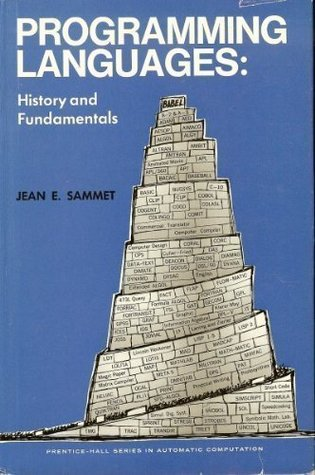

Programming Languages: History and Fundamentals, by Jean Sammet

published in 1969
Jean begins with the definition of a programming language.
"The first characteristic of a programming language is that the user can write a program without knowing much -- if anything -- about the physical characteristics of the machine on which the program is to be run. This same comment does not apply if he [sic] wishes to obtain maximum efficiency."
She then contrasts high-level language advantages and disadvantages.
(distinct perhaps from scientists who use
programming to solve their non-programming domain problems)
"In the case of a language designed for use by a professional programmer, a major characteristic is to provide maximum capability."
"...the professional programmer will almost always want to be able to get at the machine code."
"...it should be kept in mind that the language and the means of defining the language are not the same thing."
"Somehow the standardization process must avoid eliminating or preventing technical progress. This is extremely difficult..."
"The usefulness of the language must be judged independently of the compilers which implement it."
"The two greatest criticisms of compilers are slow compilation and poor object code."
"Only after a language has been in use for a while can its advantages be ascertained."
In the end, plus ça change, plus c’est la même chose.
"...the complexities of today's large computers make it very difficult to learn to program them at all, let alone effectively."